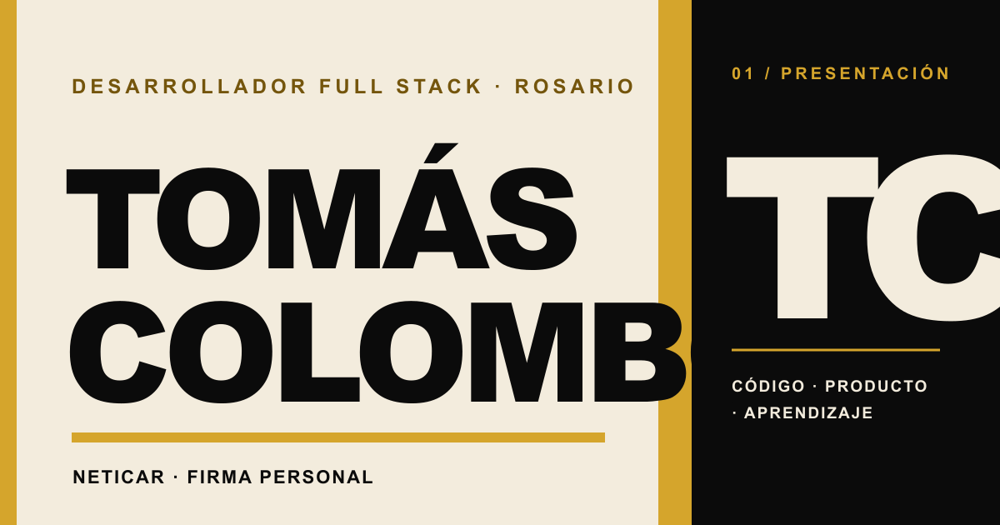
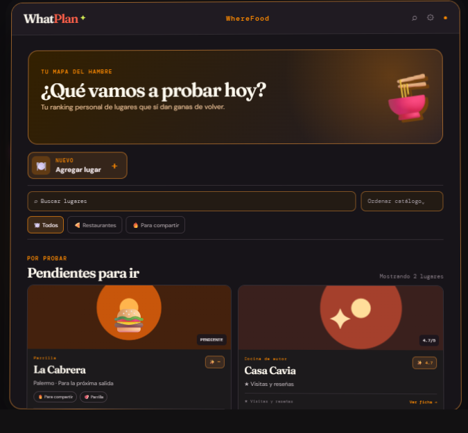
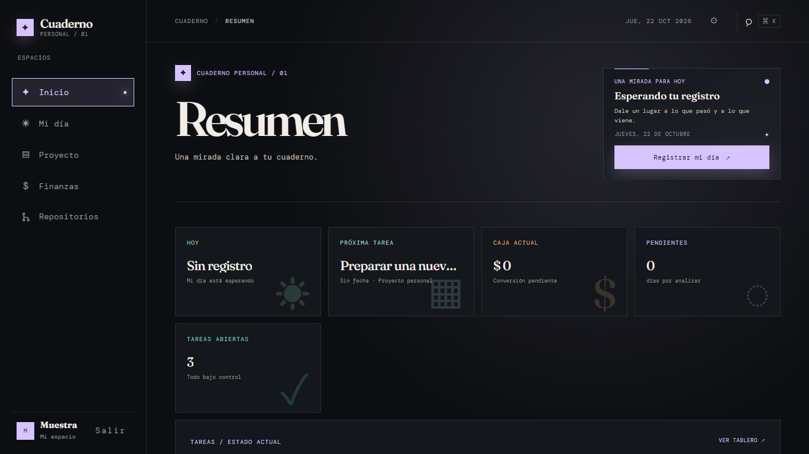
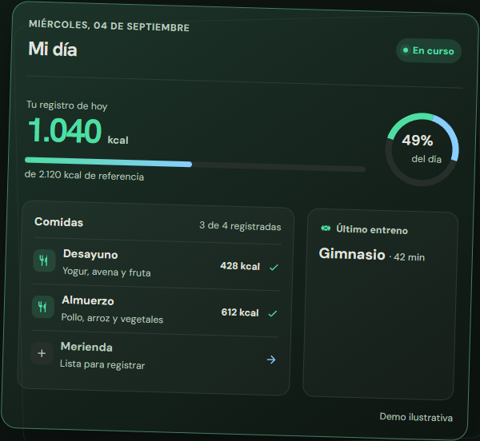
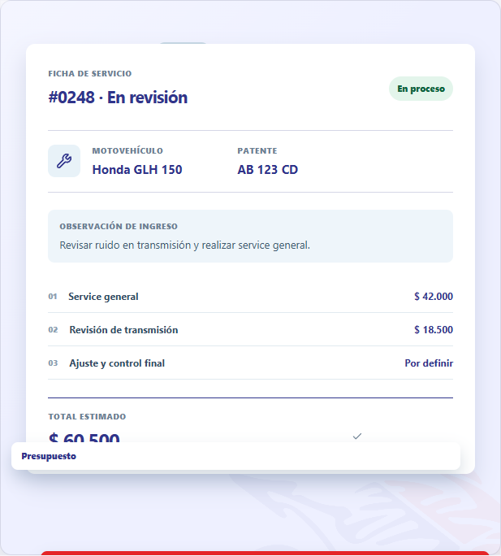

Una firma personal para construir soluciones.
Manual de marca y sistema visual.
Edición de octubre de 2026.
01 / ESENCIA
Una persona. Un trabajo. Una firma.
Neticar es la firma personal de Tomás Colombo. La identidad muestra quién está detrás del trabajo y acerca productos, experiencia y conversaciones a una misma voz.
Posicionamiento
Tomás trabaja como desarrollador Full Stack en Rosario. En Neticar presenta su recorrido y construye software a medida, productos digitales e integraciones desde necesidades concretas.
Personalidad
Humana, curiosa, precisa, profesional y accesible. La marca transmite atención y criterio sin formalidad distante ni promesas grandilocuentes.
La regla de la evidencia
La persona abre la conversación. El recorrido aporta contexto. Los proyectos permiten ver el trabajo. Cada elemento cumple un propósito; la decoración deja espacio para esa prueba.
- Hablar directamente y en primera persona.
- Explicar el problema y el trabajo con lenguaje claro.
- Mostrar capturas reales y conservar su identidad propia.
02 / FIRMA
TC identifica; el nombre firma.
El lockup combina monograma, nombre y descriptor. Se conserva la relación entre esos tres elementos en cada aplicación.
Versión principal
Neticar · firma personal
Usar en navegación, documentos, perfiles profesionales y piezas editoriales.
Versión compacta
El monograma funciona cuando el nombre completo ya está visible o el soporte es pequeño.
Aplicaciones: favicon, avatar e identificador de pestaña.
En la cabecera del sitio publicado, el TC se simplifica sin subrayado y acompaña al nombre y descriptor. El favicon conserva el subrayado ocre de la versión compacta.
Área de reserva y tamaños
Dejar libre alrededor del monograma un margen mínimo de un octavo de su ancho. Para el lockup, mantener al menos la altura del monograma entre la firma y otros elementos. En pantalla, el bloque TC no debe bajar de 24px de lado.
- Conservar letras marfil, bloque negro y subrayado ocre.
- No deformar, inclinar, contornear ni agregar sombras o degradados.
- No separar el monograma del nombre si todavía hay espacio suficiente para el lockup.
03 / COLOR
El papel y la tinta dan el tono.
Una base marfil y negra crea contraste; el ocre señala la firma, las acciones y algunos detalles.
#F3ECDD#FAF7EF#0B0B0B#27251F#5B574D#C8C1B3#D5A52C#D8D0BF#46433BUso y contraste
Texto normal en negro o tostado sobre marfil; texto marfil o grisáceo sobre negro. La acción primaria combina fondo ocre y texto negro. El ocre no se usa como cuerpo pequeño sobre marfil: su contraste es insuficiente para lectura prolongada.
Las capturas de productos conservan su paleta. Los colores internos de cada producto no pasan a ser colores de Neticar.
04 / TIPOGRAFÍA
Una voz de alto peso. Una voz para leer.
Archivo Black aporta presencia a la firma; Source Sans 3 sostiene el recorrido y la interacción.
Tomás Colombo
Archivo Black · titulares, firma y monograma · peso 400
Diseño y desarrollo sistemas, productos e integraciones para convertir una necesidad operativa en una solución concreta.
Source Sans 3 · lectura, navegación y controles · regular, semibold y bold
Jerarquía tipográfica
- Nombre y portada: tamaño fluido de 3.45rem a 6rem, interlineado compacto.
- Titulares de sección: de 2.15rem a 3.65rem según el ancho disponible.
- Lectura: 16 a 18px y líneas de 65 a 70 caracteres aproximadamente.
- Controles: Source Sans 3 semibold o bold, con etiquetas descriptivas.
No imitar Archivo Black con otra familia. Si la fuente principal no está disponible, usar Arial como fallback legible sin alterar el orden de lectura.
05 / VOZ
Claro, cercano y en primera persona.
La voz de Neticar le habla a una persona que busca resolver algo. Evita tecnicismos innecesarios y explica los que aportan contexto.
Así hablamos
- Con voseo argentino y frases directas.
- Con seguridad tranquila, sin exagerar.
- Desde el trabajo y la experiencia que se pueden mostrar.
- Con vocabulario concreto: necesidad, sistema, producto, integración.
Así no hablamos
- Con superlativos o garantías que no estén respaldados.
- Con jerga como sustituto de una explicación.
- Como una empresa impersonal o un equipo que no existe.
- Con urgencia artificial o llamados vagos.
Ejemplo
“Contame el contexto de tu proyecto. Vemos juntos cuál puede ser el próximo paso.”
Los botones describen una acción: “Hablemos de tu proyecto”, “Ver trabajo seleccionado” o “Escribirme por WhatsApp”. En el texto de proyectos se dice qué hace cada producto, sin atribuir resultados no confirmados.
06 / FOTOGRAFÍA
Una presencia real y natural.
El retrato de Tomás es parte de la firma: aporta una referencia humana y sitúa el portfolio en una práctica personal.
Dirección fotográfica
- Mantener el retrato publicado, de espaldas, en su color natural y entorno cotidiano.
- Respetar el encuadre; no recortar para simular un rostro visible ni sustituir la foto por un retrato inventado.
- Dejar aire alrededor de la figura y usar el marco negro con desplazamiento ocre.
- Evitar filtros monocromos, saturación artificial y texto sobre la fotografía.
Fotografía de producto
Usar capturas actuales o muestras identificadas. Mantener legibilidad, colores propios y la leyenda de datos ficticios cuando aplique.
07 / COMPOSICIÓN
Una página con aire y un punto de atención.
La jerarquía se construye con escala, alineación y espacio; los adornos no reemplazan al contenido.
Ritmo
- Contenedor web de hasta 1200px.
- Márgenes laterales fluidos y secciones con 78 a 124px de separación vertical.
- Reglas de un píxel en divisiones y bordes.
- Más espacio antes del titular que después.
Portada
- Nombre y propuesta en la columna izquierda.
- Retrato 4:5, enmarcado en negro y ocre, en la derecha.
- Acción principal junto al resumen, antes de la foto en móvil.
- Un índice breve al pie, separado por una regla.
Superficies
Marfil para presentación, perfil y proyectos. Negro para recorrido y contacto, donde la experiencia y el siguiente paso toman protagonismo. Los textos secundarios sobre negro usan el tono marfil grisáceo; las reglas oscuras se mantienen discretas.
La web publicada usa rótulos breves en mayúsculas para ubicar secciones, una barra ocre lateral en el perfil y tarjetas de proyecto con sombra desplazada negra que pasa a ocre al interactuar.
En piezas impresas, conservar el mismo orden visual y dar espacio a la lectura. No reducir el cuerpo para hacer caber más contenido.
08 / SISTEMA DIGITAL
La identidad en uso.
La página publicada reúne marca, persona, recorrido y proyectos en una sola experiencia adaptable.

Encabezado
Lockup completo, navegación por secciones y contacto visible. En móvil, el menú conserva un control rotulado, estados accesibles y cierre con Escape.
Interacción
La acción principal abre WhatsApp. Los vínculos secundarios ayudan a explorar el trabajo y la trayectoria. El movimiento es breve y desaparece con la preferencia de movimiento reducido.
La ruta /cv presenta la trayectoria en formato imprimible y ofrece la acción de imprimir o guardar como PDF.
Metadatos: idioma `es`, base `https://neticar.com.ar`, favicon TC y tarjeta social con el nombre y descriptor actuales.
09 / PROYECTOS
La evidencia conserva su propia identidad.
Cada proyecto se presenta con una captura actual o una muestra visual identificada, su nombre y una categoría clara.

Producto para parejas

Producto personal · datos ficticios de muestra

Salud y hábitos · vista de muestra

Gestión de talleres
Retícula y tarjeta
Los cuatro proyectos destacados usan dos columnas en impresión y en pantallas estrechas. En cada tarjeta, el nombre tiene prioridad visual y la acción aparece después de una descripción concreta.
- Usar imágenes actuales para WhatPlan, Notes, ScaleGrams y Avianto.
- Identificar siempre la muestra de Notes y conservar sus datos ficticios.
- Conservar las capturas locales de Finca Don Esteban, Kaza, Chiquitines y HGFull.
- No aplicar filtros, colores, marcos internos ni gradientes sobre las interfaces capturadas.
10 / APLICACIONES
Una firma que se adapta al soporte.
La misma relación entre persona y trabajo organiza materiales digitales, documentos y conversaciones.
Web y redes
- Lockup en cabecera, pie y portada de perfil.
- Tarjeta social de 1200 × 630px con texto dentro de zona segura.
- Avatar TC cuadrado para perfiles donde el nombre ya está escrito.
- Retrato y capturas sin recorte agresivo ni pérdida de contexto.
- En el sitio, la ruta `/cv` permite imprimir o guardar la trayectoria como PDF.
Documento y presentación
- Portada con nombre, descriptor, una frase y retrato.
- Titulares Archivo Black; lectura Source Sans 3.
- Usar ocre en llamadas puntuales, encabezados y líneas de firma.
- Reservar el negro pleno para texto y campos de contraste.
Exportación
Favicon en SVG cuadrado. Imagen social PNG de 1200 × 630px. Retrato y capturas en PNG o JPEG con resolución suficiente para el tamaño final. Mantener una copia maestra sin compresión destructiva.
Archivos maestros
El paquete conserva el favicon SVG, la tarjeta social, el retrato, las fuentes de escritorio y las capturas actuales de WhatPlan, ScaleGrams y Avianto. Los recursos de diseño viven en design/assets/; sus copias para la web están en public/. Las familias tipográficas mantienen sus licencias.
Conservar nombres descriptivos y el sufijo -current en las capturas vigentes. Cuando cambie la identidad, actualizar el PDF, el HTML y los recursos públicos en una misma revisión.
11 / CONTROL DE CALIDAD
Antes de dar una pieza por terminada.
Usar esta lista para web, documentos, presentaciones y piezas sociales.
- ¿Aparece “Tomás Colombo” como titular y “Neticar · firma personal” cuando el contexto lo necesita?
- ¿El monograma mantiene proporciones, color y espacio de reserva?
- ¿Los titulares usan Archivo Black y la lectura Source Sans 3?
- ¿El ocre está reservado para señal, acción y acento?
- ¿El texto corriente alcanza contraste de 4.5:1 y el grande 3:1?
- ¿El retrato conserva su tono natural y el recorte deja aire suficiente?
- ¿Las capturas conservan los colores propios de cada producto?
- ¿La pieza funciona en móvil, con teclado y con movimiento reducido?
- ¿Los botones y enlaces dicen qué acción realizan?
La prueba final
La identidad está bien aplicada cuando la persona, el trabajo y la acción se entienden con rapidez, y los elementos visuales ayudan a verlos con claridad.